Part 3: Multiple Linear Regression
Introduction - Multiple Linear Regression
- Extension of simple linear regression to more than one (continuous/ordinal) independent variables.
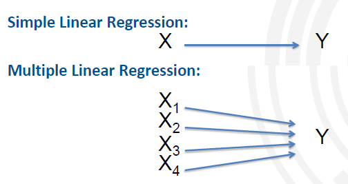
Example - Cigarettes and coronary heart disease
According to the results of the linear regression, 50% of the variance in CHD mortality could be explained by cigarette consumption.
What about the other 50%? Maybe exercise or cholesterol?
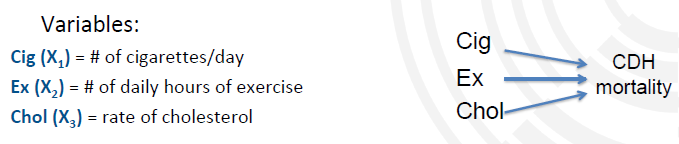
Same way to obtain estimates of the regression coefficients (least squares), e.g. for \(X_i\) independent variables:
\[ \hat{Y} = a + b_1x_1 + b_2x_2 + ... + b_ix_i + e \]
where:
- \(a\) = the Y-intercept
- \(x_1\) to \(x_i\): scores of the independent variables
- Slopes (\(b_1 to b_i\)): regression coefficients (weighted scores of each independent variable, adjusted for the other ones in the model)
- \(e\): error (residuals)
Each regression coefficient is the amount of change in the outcome variable that would be expected per one-unit change of the predictor, if all other variables in the model were held constant.
Functions of multivariable analysis:
- Control for confounder effects
- e.g. to adjust for age, add age into the model
- Test for interactions between predictors
- Improve prediction
Assumptions
- Level of measurement
- Sample size
- Linearity between outcome and predictors
- Independence of observations
- Homoscedasticity of residuals
- Normality of residuals
- No multicollinearity
- No extreme outliers
- No overfitting
Level of Measurement & Sample size
Level of measurement:
- Dependent variable: Continuous.
- Independent variables: Continuous or dichotomous.
Sample size: n = #subjects, m = #independant var:
- Should be at least 10 or 20 times as many observations as there are independent variables (\(n>>m\)) otherwise the estimates of the regression are unstable.
Linearity between outcome and predictors:
- Look at the plot of residuals vs. predicted values.
- If the residuals are spread randomly around a straight line, this suggests that the assumption that the relationship is linear is reasonable.
Independence of observations:
- Each observation in the data set corresponds to a different individual.
- Look at the plot of residuals vs. predicted values.
- If the residuals are spread randomly around the residual = 0 line, this suggests that the assumption of independence of observations is reasonable.
Homoscedasticity of residuals:
- Look at the plot of residuals vs. predicted values.
- If size of errors proportional to size of predictors, can be due to violation of linearity and/or independence of errors.
- Solution: log-transformation of the dependent variable.
Normality of residuals:
- Look at the residuals normal probability plot.
- Points should fall close to the diagonal line.
- If not, can be due to variables non-normally distributed, non-linear relationship, outliers, etc.
- Solution: log-transformation of the variables.
No Multicollinearity:
- If two independent variables are closely related (correlation coefficient is high) it is difficult to estimate their regression coefficients because they tend to get confused and they will cancel each other out and destroy the model.
- This difficulty is called collinearity.
- Solution is to exclude one of the highly correlated variables.
Outliers:
- Outliers can have a strong influence on the regression estimates.
- Solution depends on the origin of the outlier.
Overfitting:
In multivariable modeling, you can get highly significant but meaningless results if you put too many predictors in the model compared to the number of samples.
The model is fit perfectly to the quirks of your particular sample but has no predictive ability in a new sample.
A common approach that controls over fitting by keeping the number of predictors to a minimum is stepwise multiple regression:
- Start with the one predictor that explains the most predicted variance (i.e., has the highest correlation coefficient with the outcome).
- Statistically significant predictors are added to the model one at a time.
- The process is repeated until no remaining predictor has a statistically significant correlation with the outcome.
Coefficient of determination (\(R^2\))
\(R^2\):
- Represents the proportion of the dependent variable explained by combined effects of the independent variables.
- Indicates how well the model fits the data.
\(R^2_{adjusted}\):
- Used for estimating explained variance in a population (\(≠\) sample).
- Used when sample size is small and when results have to be generalized.
- Corrects for overparameterization.
Example: Effect of ignoring problems and not worrying on psychological stress
Does “ignoring problems” (ind. var 1) and “not worrying” (ind. var 2) predict “psychological distress” (dep. var)?
- \(n = 224\) participants (Australian adolescent population).
- \(Y\): Measure of psychological distress (low scores indicated a high level of psychological distress).
- \(X_1\): Not Worrying (score based on items).
- \(X_2\): Ignoring problems (score based on items).
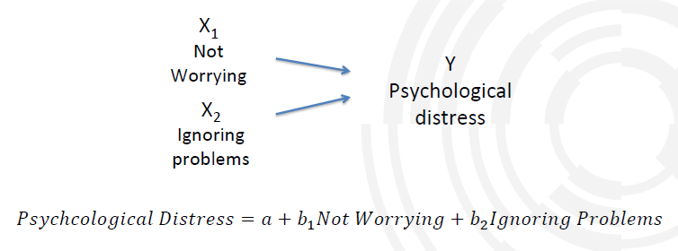
Correlation Matrix:
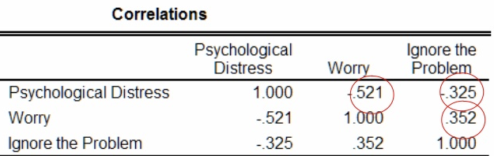
- Correlations among the independent variables are low (0.352).
- Correlations between the independent and dependent variables are negative (-0.521 and -0.325).
Is there a linear relationship between all of the \(X\) variables taken together and \(Y\)?
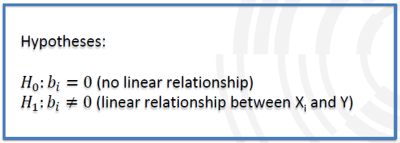
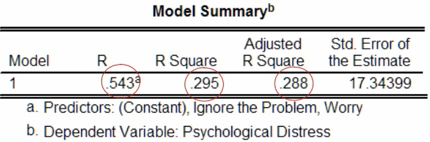
Together, “ignoring problems” and “not worrying” explain 29.5% of the variability in “psychological distress” in Australian adolescent population (\(R^2_{adjusted} = 0.288\)).
Is there a linear relationship between each \(X\) variable and \(Y\)?
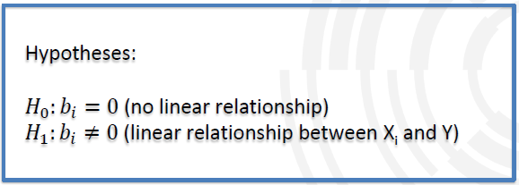
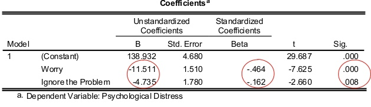
“Not Worrying” predicts about 3 times as much variance in “psychological distress” than “ignoring the problem”. Both are significant, negative predictors of mental health.
The increase of 1 unit of “Not Worrying” is estimated to decrease 11.5 units of psychological distress keeping everything else constant.
The increase of 1 unit of “Ignoring problem” is estimated to decrease 4.7 units of psychological distress keeping everything else constant.
\[ Psychol. Distress = 138 - 11.5 * Not Worrying - 4.7 * Ignoring Problems \]
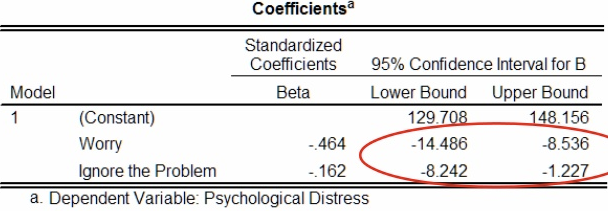
Psychological Distress is reduced by between 8.5 and 14.5 units per 1-unit increase of “Not Worrying” keeping everything else constant.
Psychological Distress is reduced by between 1.2 and 8.2 units per 1-unit increase of “Ignore problem” keeping everything else constant.
Non-linear models
Linear Regression fits a straight line to your data.
Non-linear models may, in some cases, be more appropriate.
Non-linear models are usually used when non-linear relationships have some biological explanation. (e.g. non-linear models are commonly used in compartmental analysis).
Summary
| Outcome (dependent variable) | Example outcome variable | Appropriate multivariate regression model | Example equation | What do the coefficients give you? |
|---|---|---|---|---|
| Continuous | Blood pressure | Linear regression | \(blood pressure (mmHg) = α + βsalt*salt consumption (tsp/day) + βage*age (years) + βsmoker*ever smoker (yes=1/no=0)\) | slopes—tells you how much the outcome variable increases for every 1-unit increase in each predictor. |
| Binary | High blood pressure (yes/no) | Logistic regression | \(ln (odds of high blood pressure) = α + βsalt*salt consumption (tsp/day) + βage*age (years) + βsmoker*ever smoker (yes=1/no=0)\) | odds ratios—tells you how much the odds of the outcome increase for every 1-unit increase in each predictor. |
| Time-to-event | Time-to-death | Cox regression | \(ln (rate of death) = α + βsalt*salt consumption (tsp/day) + βage*age (years) + βsmoker*ever smoker (yes=1/no=0)\) | hazard ratios—tells you how much the rate of the outcome increases for every 1-unit increase in each predictor. |

Exercise 5 - Identify potential predictors of Systolic Blood Pressure
Where to start?
- Matrix of correlations for continuous variables.
- Missing values?
- Stepwise selection or a priori variable selection.
- Estimate multiple regression model.
- Check assumptions.
- If not met: transformation of variables, removal of outliers, etc.
- Interpretation of the results.
Approach 1: Step-wise Selection
- Matrix of correlations for continuous variables (from Exercise 2).
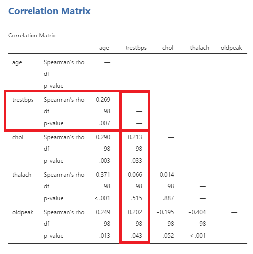
Observations:
- Variables age and cholesterol have the highest correlations with SBP.
- There are no highly correlated variables (So no collinearity problems if included in the model).
- Identify potential predictors of SBP in univariable linear regressions.
- Estimate individual linear regressions of SBP as the dependent variable and Age, Gender, Cholesterol level, Fasting Blood Sugar (FBS), and Maximum Heart Rate (
thalach) as the independent variables. - Look at the significance level of the ANOVA table for each of the 5 regressions.
- Select potential predictors (significant p-value or \(p < 0.2\)).
- Select Analyses > Regression > Linear Regression.
- Move
trestbpsinto Dependent Variable andageinto Covariates. - Under Model Coefficients, check ANOVA test.
- Repeat Steps 2-3 swapping
agewiththalach, one by one. - Move
trestbpsinto Dependent Variable andsexinto Factors. - Repeat Steps 2-3 swapping
sexwithfbs.
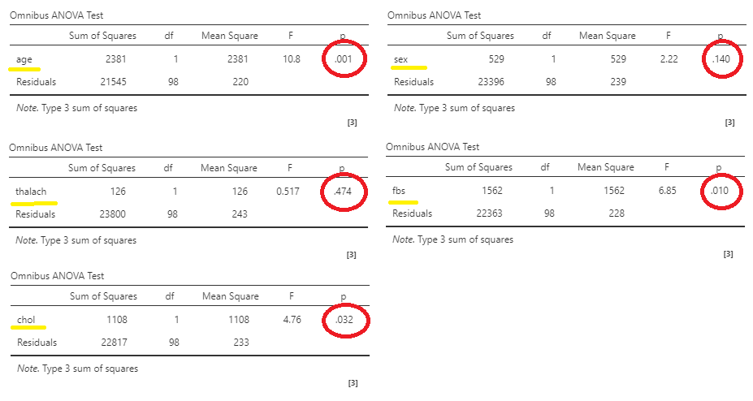
Variables Age, Gender, Cholesterol, Level and FBS are potential predictors (\(p < 0.2\)). Maximum Heart Rate (thalach) is discarded.
- Multiple linear regression including potential predictors of SBP previously identified.
- Estimate simple linear regression of SBP as the dependent variable and independent variable with smallest p-value (
age). - Add other independent variables one by one from lowest to highest p-value.
- Look at the significance level of the ANOVA table for the regression, if improved past a certain threshold from previous specification, variable is added to model.
- Estimate the final model and check assumptions of the model.
- Select Analyses > Regression > Linear Regression.
- Move
trestbpsinto Dependent Variable. - Move
age,chol, andthalachinto Covariates. - Move
sexandfbsinto Covariates. - Under Model Builder, confirm all five predictors are present in Block 1.
- Under Model Coefficients, check ANOVA test.
- In the Results panel, under Omnibus ANOVA Test, find the independent variable with the largest p-value, e.g.
thalach\(p = 0.869\)
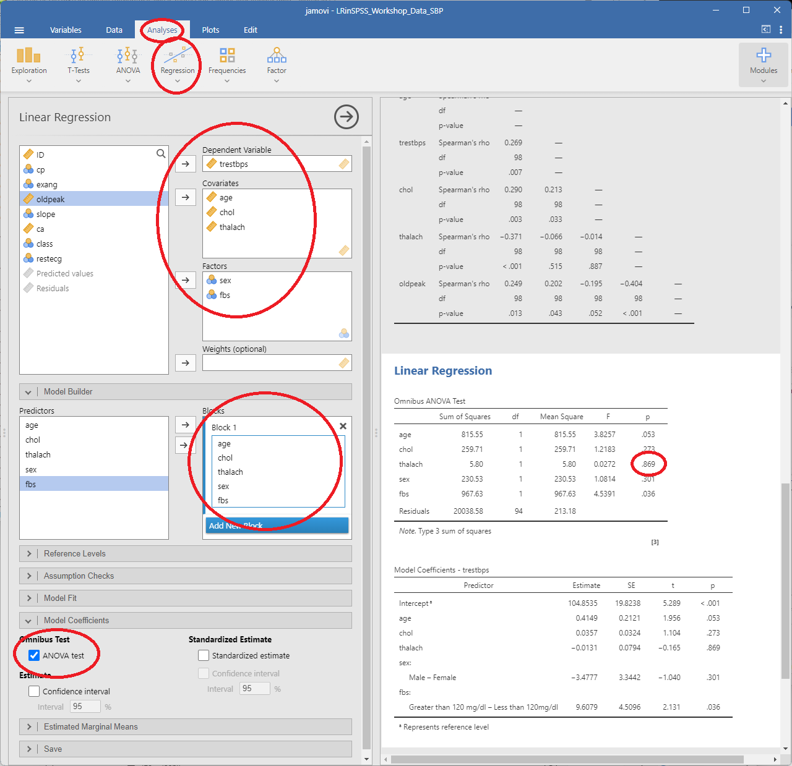
- Remove
thalachfrom Block 1 and notice the remaining p-values change. - Continue removing independent variables one by one based on largest p-values until any remaining variables that have \(p < 0.05\).
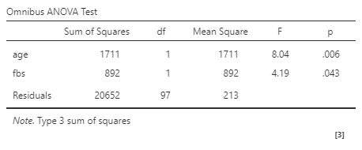
- Under Assumption Checks, check Collinearity statistics and Q-Q plot of residuals.
- Under Model Fit, check \(R^2_{adjusted}\) and F test.
- Under Model Coefficients, check Confidence interval. Leave the interval at 95%.
- Under Save, check Predicted Values and Residuals.
- From the top menu, select Plots > Scatter Plot.
- Move
Predicted valuesinto X-Axis andResidualsinto Y-Axis.
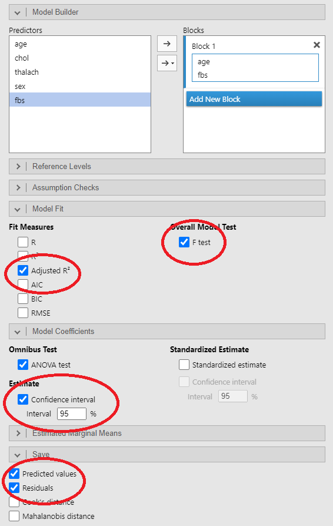
Model Summary
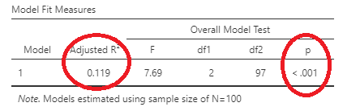
- Adj R square: 0.119: Approx. 12% of the variability in SBP is explained by the combination of Age and FBS.
- p-value: < 0.05. Meaning that the regression model predicts SBP significantly well.
Coefficients
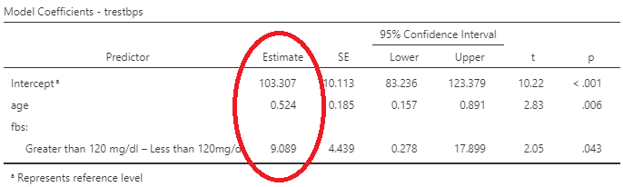
- Final model selected: \[\hat{SBP} = 103.3 + 0.52 * Age + 9.09 FBS\]
- SBP increases by 0.52 units for every unit increase of age when all other variables in the model kept constant.
- SBP is higher for participants with fbs > 120 than those with fbs < 120 (estimate=9.09) when all other variables in the model kept constant.
Check assumptions of the multiple linear regression model
- Level of measurement
- Sample size
- Linearity between outcome and predictors
- Independence of observations
- Homoscedasticity of residuals
- Normality of residuals
- No multicollinearity
- No extreme outliers
- No overfitting
Check: Level of measurement
For linear regression:
- Dependent variable: continuous
- Independent variables: continuous or categorical
Check: Sample size
The number of subjects (n) Should be at least 10 or 20 times greater than teh number of independent variables (m).
\[ n = 100 \] \[ m = 2 \] \[ n \gg m \]
Check: Linearity, Independence, Homoscedasticity
Residuals vs predicted values plot
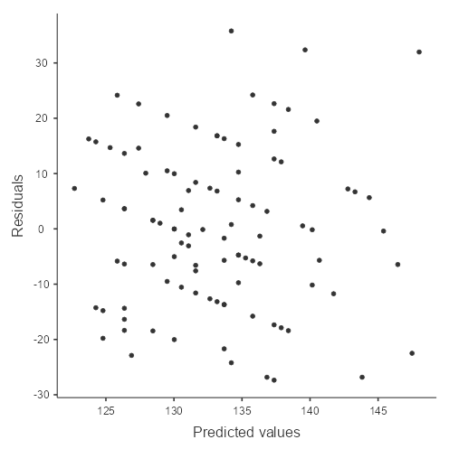
A well-behaved “residuals vs. predicted values plot” roughly form a “horizontal band” around the residual = 0 line. This suggests that the outcome and predictor variables share a linear relationship, variances of the error terms are equal (Homoscedastic), and observations are independent.
Check: Normality of residuals
Normal probability plot of residuals
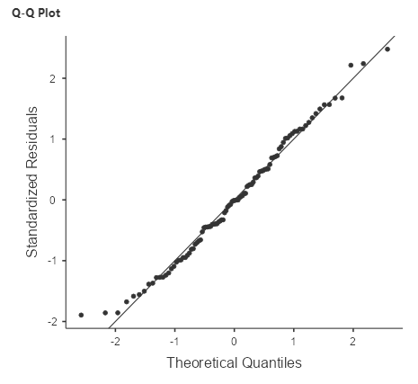
A well-behaved “Normal Q-Q plot” roughly lines the points along the diagonal line. This suggests that the residuals are normally distributed.
Check: No multicollinearity
Coefficients and Excluded Variables
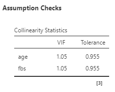
- Check the Variance Inflation Factor (VIF) value of the included regressors (independent variables).
- Rule of thumb: VIF valuesv< 5 indicate absence of multicollinearity in the model.
Check: No extreme outliers
Residuals vs predicted values plot
- If no one residual stands out from the basic random pattern of residuals in the “residuals vs. predicted values plot”. This suggests that there are no outliers.
Check: No overfitting
Controlled by using stepwise model selection.
| Assumption | Check | Met |
|---|---|---|
| Level of measurement | Check outcome and predictor variable types | Yes |
| Sample size | Sample is at least 10 or 20 subjects | Yes |
| Linearity | Plot residuals against the predictor or fitted values | Yes |
| Independence of observations | Check residuals against fitted values | Yes |
| Homoscedasticity of residuals | Check residuals against fitted values | Yes |
| Normality of residuals | Check the residual Q-Q plot | Yes |
| No multicollinearity | Check the Variance Inflation Factor (VIF) | Yes |
| No extreme outliers | Check residuals vs. fitted values plot | Yes |
| No overfitting | Used stepwise selection | Yes |
Approach 2: A Priori Selection of Variables
- Multiple linear regression including all predictors of SBP previously identified.
- Estimate multiple linear regression of SBP as the dependent variable and Age, Gender, Cholesterol level, Fasting Blood Sugar (FBS) and Maximum Heart Rate (
thalach) as the independent variables. - Look at the p-value of the ANOVA table for the regression.
- Check assumptions of the model.
- Use a robust approach to select final model (Stepwise, Backward elimination, Lasso, etc.).
- Select Analyses > Regression > Linear Regression.
- Move
trestbpsinto Dependent Variable. - Move
age,chol, andthalachinto Covariates. - Move
sexandfbsinto Covariates. - Under Assumption Checks, check Collinearity statistics and Q-Q plot of residuals.
- Under Model Fit, check \(R^2_{adjusted}\) and F test.
- Under Model Coefficients, check ANOVA test and Confidence interval. Leave the interval at 95%.
- Under Save, check Predicted Values and Residuals.
- From the top menu, select Plots > Scatter Plot.
- Move
Predicted valuesinto X-Axis andResidualsinto Y-Axis.
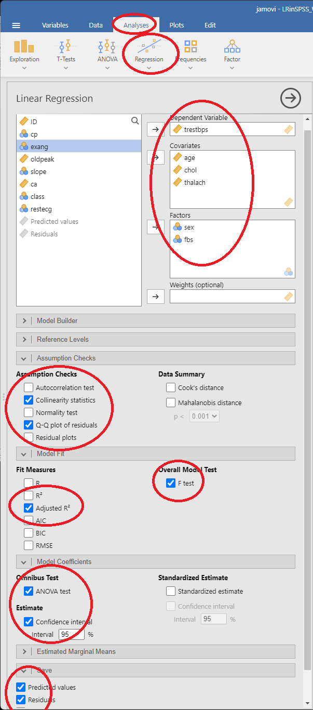
Model Summary
- Adj R square: 0.118: Approx. 12% of the variability in SBP is explained by the combination of independent variables.
- p-value: < 0.05. Meaning that the regression model predicts SBP significantly well.
Coefficients
- SBP level equals 104.9 mmHg when all the other variables in the model = 0
- SBP increases by 0.41 units for each unit increase of age (sig. at 10%)
- SBP level was 9.6 units higher in patients with FBS greater than 120 as compared to those with FBS <= 120 units.
- Despite adding more variables, this model explains 12% variability (\(R^2_{adjusted} = 0.118\)) in the outcome (similar to the other model).
- Some variables that had significant effect in the other model are now insignificant (age, sex).
- Use a robust approach to select final model (e.g., Stepwise).
Check: Residuals vs predicted values plot
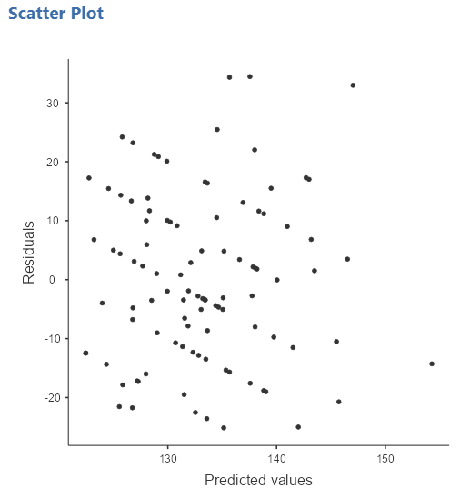
- Dots roughly form a “horizontal band” around the residual = 0 line. This suggests that the outcome and predictor variables share a linear relationship, variances of the error terms are equal (Homoscedastic), observations are independent, and there are no outliers.
Check: Normal probability plot of residuals
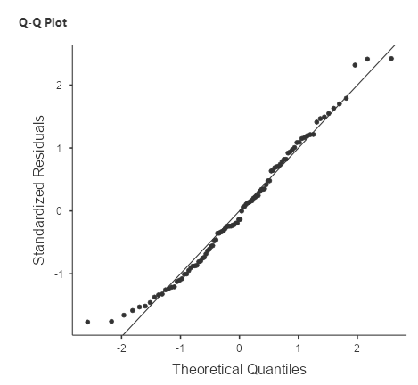
- Dots roughly line up along the diagonal line. This suggests that the residuals are normally distributed.
Check: Multicollinearity
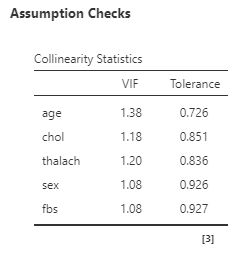
- All VIF values < 5. Multicollinearity is not present in this model.
Conclusion:
- All multiple linear model assumptions hold.
Exercise 6 Identify potential predictors of plasma beta-carotene level
Determinants of Plasma Beta-Carotene Levels
- Cross-sectional study investigating the relationship between personal characteristics and dietary factors, and plasma concentrations of beta-carotene.
- \(N = 315\) patients who had surgical procedure to remove a non-cancerous lesion of the lung, colon, breast, skin, ovary or uterus.
- Data not published yet, but a related reference is: Nierenberg DW, Stukel TA, Baron JA, Dain BJ, Greenberg ER. Determinants of plasma levels of beta-carotene and retinol. American Journal of Epidemiology 1989;130:511-521.
Data dictionary
| Variable | Description |
|---|---|
age |
Age (years) |
sex |
Sex (1 = Male, 2 = Female) |
smokstat |
Smoking status (1 = Never, 2 = Former, 3 = Current Smoker) |
quetelet |
Quetelet (weight / height²) |
vituse |
Vitamin use (1 = Yes, fairly often; 2 = Yes, not often; 3 = No) |
calories |
Number of calories consumed per day |
fat |
Grams of fat consumed per day |
fiber |
Grams of fiber consumed per day |
alcohol |
Number of alcoholic drinks consumed per week |
cholesterol |
Cholesterol consumed (mg per day) |
betadiet |
Dietary beta-carotene consumed (mcg per day) |
retdiet |
Dietary retinol consumed (mcg per day) |
betaplasma |
Plasma beta-carotene (ng/ml) |
retplasma |
Plasma retinol (ng/ml) |
Importing data and Quality Control
- At the top left hand corner, select from the File menu (☰) > Open >
. - In the Data folder select and Open the file
LRinSPSS_Workshop_Data_Plasma.sav. - Select Analyses > Regression > Correlation Matrix.
- Move
age,quetelet,calories,fat,fiber,alcohol,cholesterol,betadiet,retdiet,betaplasma,retplasmainto Variables. - Under Correlation Coefficients, uncheck Pearson and check Spearman.
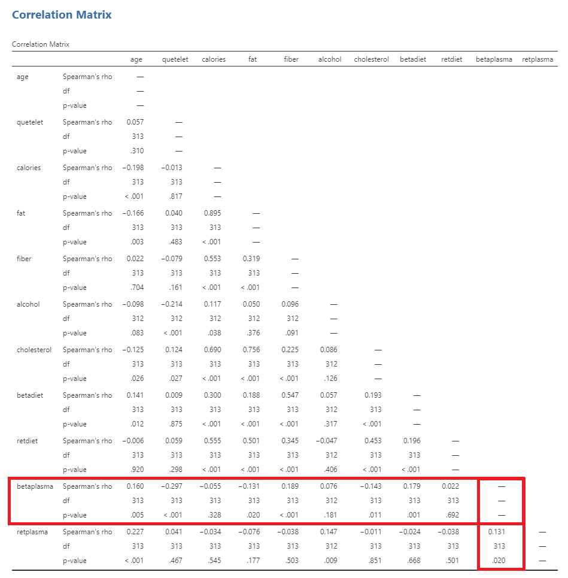
Observations:
Variables age (+), quetelet (-), fat(-), cholesterol (-), betadiet (+) and fibre (+) have the highest correlations with betaplasma (dependent variable in the model).
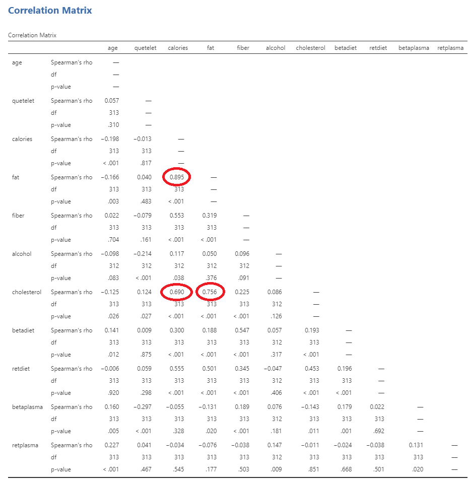
Observations:
Variables Fat, Cholesterol, and Calories are highly correlated (risk of multicollinearity).
Stepwise model selection
The original SPSS workshop uses stepwise regression to select predictors for the model. Standard jamovi does not provide the same automatic stepwise selection procedure.
The SPSS stepwise analysis selected the following predictors:
vitusequeteletbetadietcholesterolfiber
We will therefore fit this selected model in jamovi and continue with the original workshop’s model interpretation and diagnostic checks.
Coefficients
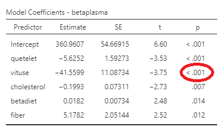
The final model includes variables vitamin use, Quetelet’s index (BMI), beta-carotene consumed, cholesterol consumed, and fibre consumed.
Note, however, that vituse is a categorical variable with three categories.
- Select Data from the top menu to bring up the data set.
- Double-click the
vitusecolumn. - Check that Measure type is set to Nominal and the Levels are ordered as desired.

- In the Results panel, click anywhere within the Model Coefficients table to reopen the Analyses panel options.
- Move
vituseout of Covariates and into Factors. - Under Assumption Checks, check Collinearity statistics and Q-Q plot of residuals.
- Under Model Coefficients, check Confidence interval. Leave the interval at 95%.
- Under Save, check Predicted Values and Residuals.
- From the top menu, select Plots > Scatter Plot.
- Move
Predicted valuesinto X-Axis andResidualsinto Y-Axis.
Coefficients
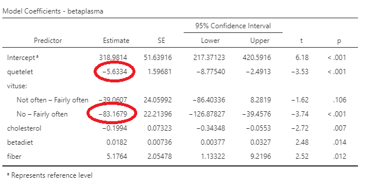
- Plasma beta-carotene seems 83.2 units lower for patients not using vitamin (vituse = 3) vs. those using it fairly often (vituse = 1), keeping everything else constant.
- Plasma beta-carotene seems to decrease by 5.63 units for every unit increase of BMI, keeping everything else constant.
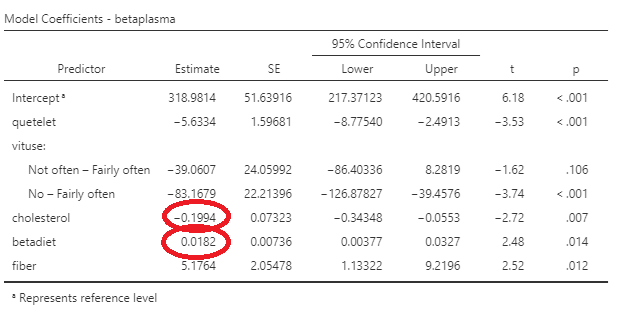
- With every unit increase in beta carotene consumed in diet, Plasma beta-carotene is increased by 0.018 units, keeping everything else constant.
- Plasma beta-carotene seems to decrease by 0.20 with every unit increase in cholesterol consumption, keeping everything else constant.
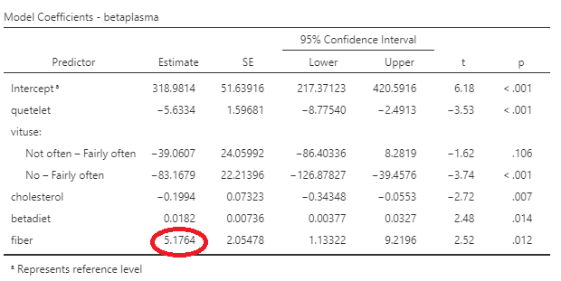
- Plasma beta-carotene seems to increase by 5.17 units with every unit increase in fiber consumption, keeping everything else constant.
Check: Residuals vs predicted values plot
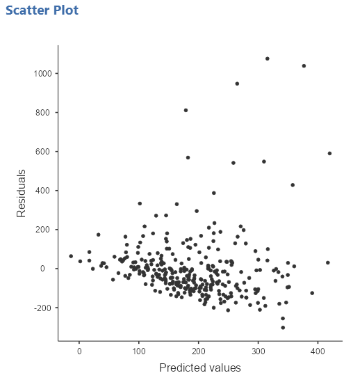
Dots roughly form a cone shaped pattern. This suggests that variances of the error terms are non-constant (Heteroscedastic).
Check: Normal probability plot of residuals
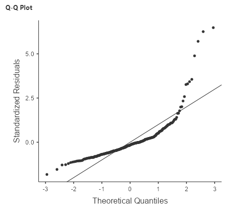
Dots do not line up along the diagonal line. This suggests that the residuals are not normally distributed.
Check: Multicollinearity
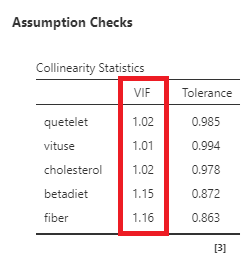
- All VIF values < 5. Multicollinearity is not present in this model.
- Not all multiple linear model assumptions hold. Results are unlikely to be accurate.
Possible solution:
Run analysis with transformed beta-plasma (logbetaplasma).
- From the top menu, select Plots > Histogram.
- Move
betaplasmainto Variable and check Show Density.
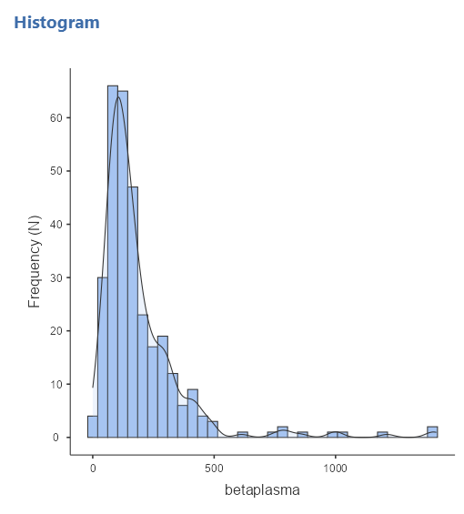
Reminder
Sometimes data are non-normally distributed but closely related log-normally distributed.

- Distribution right-skewed
- The logarithm of the data is thus normal
The log-transformation of data is very common, mostly to eliminate skewness in data.
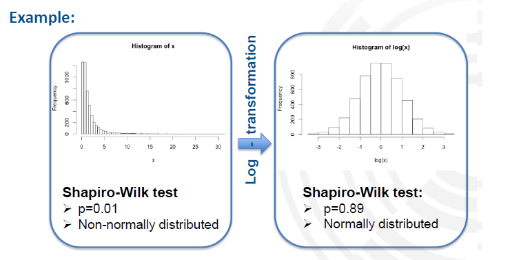
Other kinds of normalization:
- When data are counts: square-root transformation
\(x_{transf} = \sqrt{x + 1/2}\)
- When data are proportions: arcsine transformation
\(x_{transf} = arcsin(\sqrt{x})\)
- When data are frequency distribution of data is left-skewed: square transformation
\(x_{transf} = x^2\)
Exercise 6 Transformation of betaplasma
- From the top menu, select Data to bring up the data set.
- Click Add to bring up dropdown menu and choose Computed Variable | Append.

- Double-click on the newly appended
Xcolumn to bring up the Computed Variable options. - Change the variable name from
Xtologbetaplasma - Click \(f_x\) to insert the Math function LN() using a double-click. Place your cursor inside the brack and double-click on the variable
betaplasmato add it to the formula. Use your keyboard to add “+1” inside the bracket (since there’s abetaplasmavalue of 0).
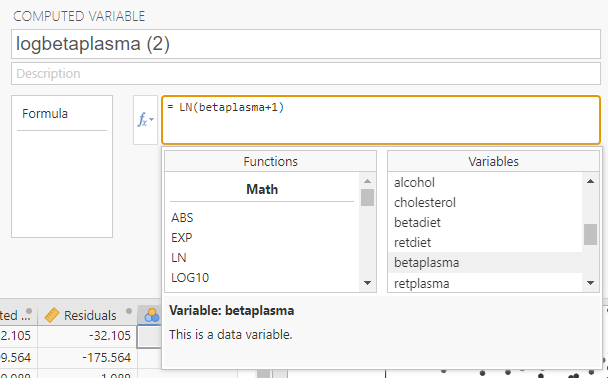
In the Data panel, notice logbetaplasma was added.
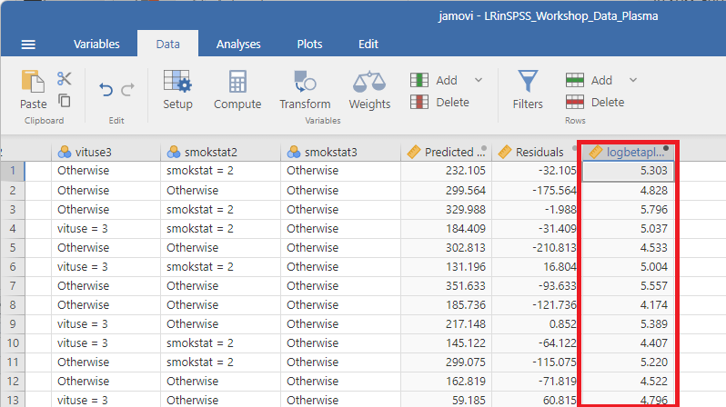
Check: Distribution of logbetaplasma
- From the top menu, select Plots > Histogram.
- Move
logbetaplasmainto Variable and check Show Density.
Distribution of beta plasma and log beta plasma
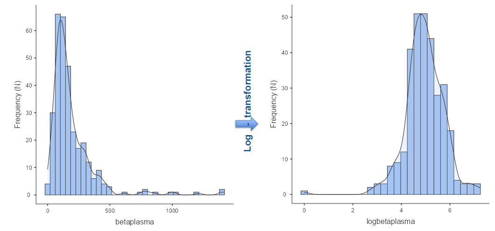
Regression with log-transformed Beta-Carotene as dependent variable
- Select Analyses > Regression > Linear Regression.
- Move
logbetaplasmainto Dependent Variable - Move
age, ,fiber,quetelet,calories,fat,alcohol,cholesterol, andbetadietinto Covariates. - Move
sex,smokstat, andvituseinto Factors.
Stepwise model selection
The original SPSS workshop uses stepwise regression to select predictors for the model. Standard jamovi does not provide the same automatic stepwise selection procedure.
The SPSS stepwise analysis selected the following predictors:
queteletcholesterolfibervitusebetadietsmokstat
We will therefore fit this selected model in jamovi and continue with the original workshop’s model interpretation and diagnostic checks.
- Under Assumption Checks, check Collinearity statistics and Q-Q plot of residuals.
- Under Model Coefficients, check Confidence interval. Leave the interval at 95%.
- Under Save, check Predicted Values and Residuals.
- From the top menu, select Plots > Scatter Plot.
- Move
Predicted valuesinto X-Axis andResidualsinto Y-Axis.
Coefficients
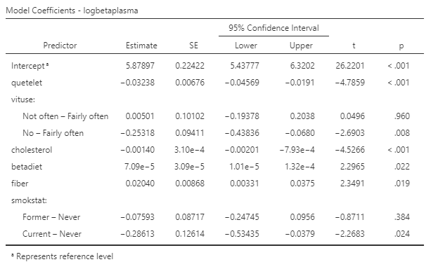
- Dependent variable (
logbetaplasma) has been log-transformed. - The interpretation of the regression coefficients is different.
Interpretation of transformed linear regression models
The interpretation of the regression coefficients depends on the model specification.
| Model | Equation | Interpretation of \(B\) |
|---|---|---|
| Linear-linear regression | \(Y = a + BX\) | 1 unit change in \(X\) leads to a \(B\) unit change in \(Y\) |
| Log-linear regression | \(ln(Y) = a + BX\) | 1 unit change in \(X\) leads to a \((100 * B)%\) change in \(Y\) |
| Linear-log regression | \(Y = a + Bln(X)\) | 1% change in \(X\) leads to a \((B/100)\) unit change in \(Y\) |
| Log-log regression | \(ln(Y) = a + Bln(X)\) | 1% change in \(X\) leads to a \(B%\) change in \(Y\) |
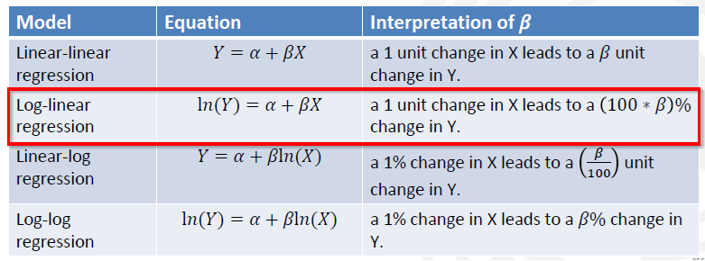
Coefficients
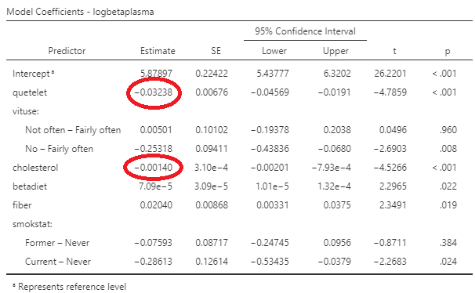
- logbetaplasma seems to decrease by 0.032 units for every unit increase of BMI or betaplasma decreases by (100*0.032)% = 3.2% for every unit increase of BMI. Keeping everything else constant.
- betaplasma seems to decrease by (100*0.001)% = 0.1% for every unit increase in cholesterol consumed. Keeping everything else constant.
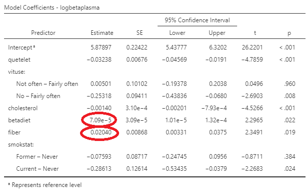
- betaplasma seems to decrease by (1000.02)% = 2% for every unit increase of fibre consumed. Keeping everything else constant. - betaplasma seems to increase by (1000.000071)% = 0.007% for every unit increase in beta-carotene in diet. Keeping everything else constant.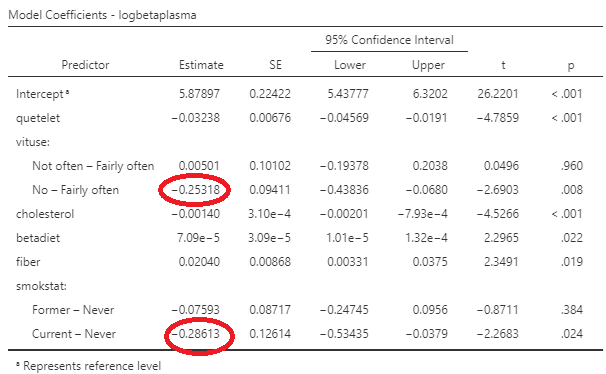
- betaplasma seems to be (100*0.253)% = 25.3% lower for patients not using vitamine vs. patients using it often. Keeping everything else constant.
- betaplasma seems to be (100*0.286)% = 28.6% lower for current smoker patients vs. non-smoker patients. Keeping everything else constant.
Check: Residuals vs predicted values plot
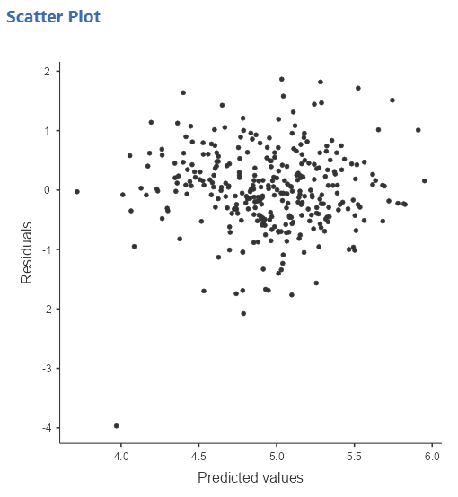
- Dots roughly form a “horizontal band” around the residual = 0 line. This suggests that the outcome and predictor variables share a linear relationship, variances of the error terms are equal (Homoscedastic), and observations are independent.
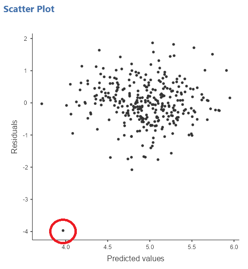
- There is one noticeable point that can be considered an outlier.
- Subject 257 seems to have a high influence on the model (it has 0 level of Plasma beta-carotene).
Solution:
- Run analysis with and without 257 and compare the results.
- Select Data > Filters.
- Click \(f_x\) to insert the Logical function IF using a double-click. Place your cursor inside the brack and double-click on the variable
betaplasmato add it to the formula. Use your keyboard to add “>0” inside the bracket (since there’s abetaplasmavalue of 0).
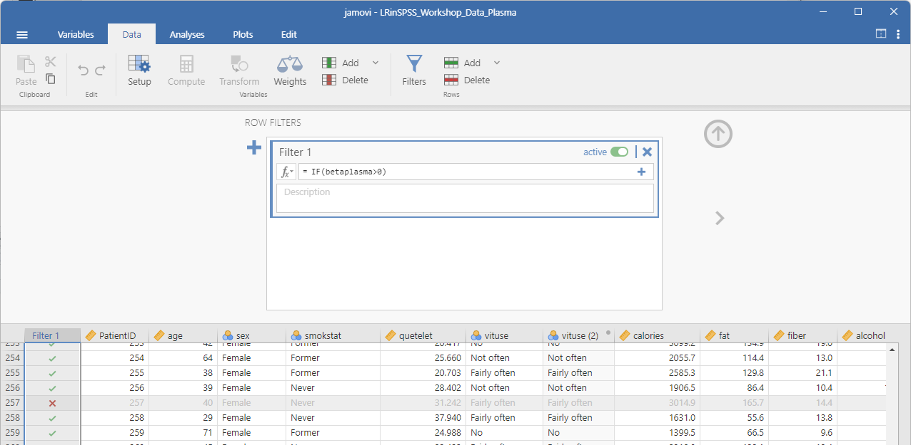
In the Results panel for this analysis, check that the Scatter Plot is no longer showing the outlier.
Scroll up to find the Model Coefficients table has also been updated.
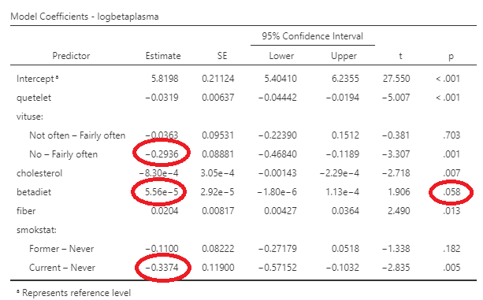
- Overall, coefficients of all variables remained similar to previous estimation.
- Beta-carotene consumed is now not-significant (effect of the outlier was giving us a false discovery previously).
- Coefficients of
vituseandsmokstatchanged the most.
Check: Residuals vs predicted values plot
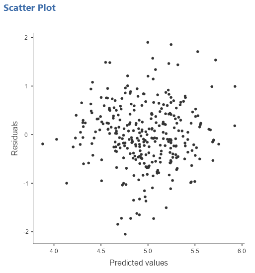
- Dots roughly form a “horizontal band” around the residual = 0 line. This suggests that the outcome and predictor variables share a linear relationship, variances of the error terms are equal (Homoscedastic), and observations are independent. Outliers are no longer an issue.
Check: Normal probability plot of residuals
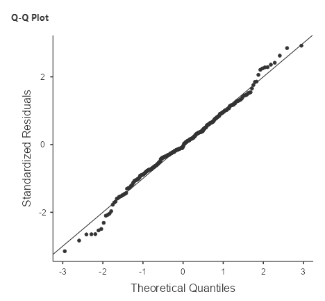
- Dots roughly line up along the diagonal line. This suggests that the residuals are normally distributed.
Check: Multicollinearity
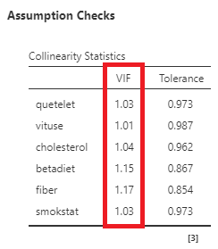
- All VIF values < 5. Multicollinearity is not present in this model.
Conclusion:
- All multiple linear model assumptions hold after taking care of the outlier.
Thank you for your attention!